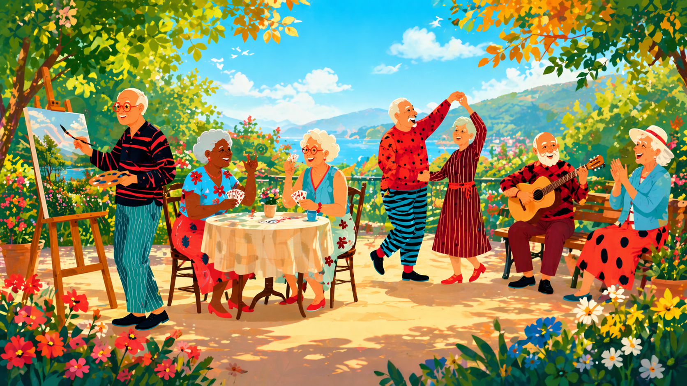

Νεάτη

Στην Ελλάδα, οι ηλικιωμένοι αντιμετωπίζουν συχνά φαινόμενα φτώχειας, δυσκολίας πρόσβασης σε ποιοτική υγειονομική περίθαλψη, δυσθρεψία, έλλειψη κοινωνικής φροντίδας και βαθιά μοναξιά. Επιπλέον, η γήρανση του πληθυσμού και η αυξημένη μακροζωία επιβαρύνουν σοβαρά τα ήδη πιεσμένα συστήματα υγείας και κοινωνικής πρόνοιας.
Η πρόταση για τη δημιουργία μιας κοινότητας αυτοδιαχειριζόμενης διαβίωσης ηλικιωμένων αποτελεί μια πρωτοποριακή και καινοτόμο κοινωνική δομή. Σέβεται την αυτονομία, καλλιεργεί την αλληλεγγύη, ενισχύει την κοινωνική ένταξη και λειτουργεί με συλλογική λήψη αποφάσεων. Μπορεί να λειτουργήσει ως πρότυπο και να αποτελέσει κίνητρο για την επέκταση αντίστοιχων εγχειρημάτων σε ολόκληρη τη χώρα. Στόχος είναι η προώθηση της ενεργούς γήρανσης, η διατήρηση της αξιοπρέπειας στην τρίτη ηλικία, η ενίσχυση της κοινωνικής συνοχής και η καταπολέμηση της φτώχειας και του κοινωνικού αποκλεισμού.
Η κοινότητα αυτή θα καλύπτει μια υπαρκτή κοινωνική ανάγκη: την ανάγκη για ασφαλή, αξιοπρεπή διαμονή, παρέχοντας ταυτόχρονα ένα πλήθος υπηρεσιών που ενισχύουν την κοινωνικότητα, την αλληλοβοήθεια, την αλληλεγγύη και την ενεργό συμμετοχή. Πρόκειται για μια εμπεριστατωμένη, ρεαλιστική και κοινωνικά καινοτόμο πρωτοβουλία.
Η συγκατοίκηση ενεργών ηλικιωμένων άνω των 60 ετών εντάσσεται στο πλαίσιο της κοινωνικής κατοικίας και της ενεργούς γήρανσης. Αντίστοιχες πρωτοβουλίες έχουν ήδη αναπτυχθεί με επιτυχία σε ευρωπαϊκές χώρες (όπως η Σκανδιναβία, η Γερμανία, η Ελβετία και η Ολλανδία), αλλά και στις Ηνωμένες Πολιτείες (όπου λειτουργούν περισσότερες από 7.000 τέτοιες δομές), ενώ ήδη αρχίζουν να κάνουν την εμφάνισή τους και στην Ελλάδα (σε Αθήνα, Θεσσαλονίκη και Θεσσαλία).
Η εναλλακτική αυτή μορφή κατοικίας προσφέρει ποιότητα ζωής, κοινωνικότητα, φροντίδα και ασφάλεια. Δίνει τη δυνατότητα στους ίδιους τους ανθρώπους να ρυθμίζουν τις συνθήκες της καθημερινότητάς τους, μειώνοντας το κόστος διαβίωσης, την απομόνωση και την εξάρτηση από κερδοσκοπικές πρακτικές, ενώ ταυτόχρονα επαναφέρει την κατοικία ως βασικό κοινωνικό δικαίωμα.
Η πρόταση περιλαμβάνει αυτοδιαχειριζόμενους χώρους διαμονής, συνοδευόμενους από ποιοτικές υπηρεσίες σίτισης και φροντίδας, καθώς και δημιουργικές, πολιτιστικές, περιβαλλοντικές και ψυχαγωγικές δράσεις. Παράλληλα, θα υποστηρίζεται η διαγενειακή αλληλεπίδραση και ο εθελοντισμός, μέσω προσφοράς δράσεων και υπηρεσιών προς την ευρύτερη κοινότητα.
Η κοινότητα θα συνεργάζεται με πολίτες, συλλόγους, σχολεία και κέντρα δημιουργικής απασχόλησης, υλοποιώντας δράσεις όπως εργαστήρια μυθοπλασίας, συλλογής παραμυθιών ή παραδοσιακών τραγουδιών, αλλά και παρασκευής παραδοσιακών προϊόντων. Επιπλέον, θα προσφέρει προσωρινή φιλοξενία σε γυναίκες ή παιδιά που βρίσκονται σε κρίση ή δυσκολία, αξιοποιώντας έναν ειδικά διαμορφωμένο χώρο. Θα παρέχει επίσης υποστήριξη για τη μελέτη, απασχόληση και φύλαξη παιδιών, όταν οι μητέρες τους έχουν ανάγκη χρόνου για εργασία, ξεκούραση ή άλλες επείγουσες υποχρεώσεις. Η κοινότητα θα μπορεί επίσης να φιλοξενεί ζώα, όταν προκύπτει ανάγκη.
Η δημιουργία μιας πρότυπης μονάδας συγκατοίκησης για ενεργούς ηλικιωμένους θα εξυπηρετεί ολόκληρη την περιοχή του Νότιου Πηλίου και θα προάγει την κοινωνική συνοχή, την ενεργό συμμετοχή των ηλικιωμένων, την καταπολέμηση της μοναξιάς και του αποκλεισμού, καθώς και την αλλαγή των αρνητικών στερεοτύπων γύρω από τη γήρανση. Η κοινότητα θα αναπτύξει δράσεις ευαισθητοποίησης και ενημέρωσης της κοινωνίας, με διασύνδεση με τοπικούς φορείς, σχολεία και εθελοντές.
Η δημιουργία της Αυτοδιαχειριζόμενης Κοινότητας Συγκατοίκησης συνιστά μια καινοτόμο, κοινωνικά υπεύθυνη και απολύτως ρεαλιστική απάντηση στις προκλήσεις της γήρανσης. Δεν πρόκειται απλώς για ένα πρόγραμμα στέγασης, αλλά για μια ολιστική προσέγγιση της ζωής στην τρίτη ηλικία: με ποιότητα, ανθρώπινο πρόσωπο, φροντίδα και συνεργασία.
Η ΚοινΣΕπ ως φορέας προσφέρει το νομικό, κοινωνικό και λειτουργικό πλαίσιο συμμετοχής των ίδιων των ηλικιωμένων στη λήψη αποφάσεων και στον σχεδιασμό της καθημερινότητάς τους, ενισχύοντας τη θέση τους μέσα στην κοινωνία.